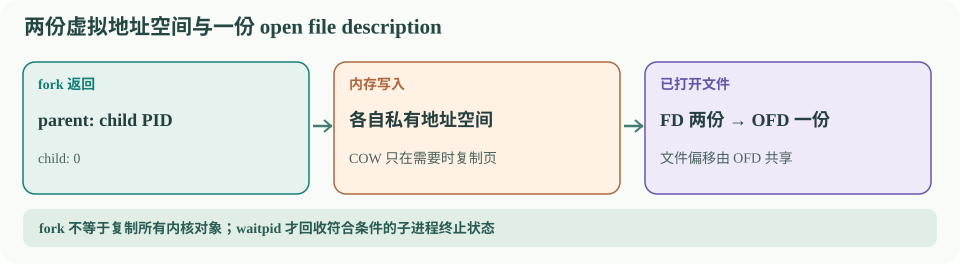

fork 一次，为什么会产生两条执行路径？
一个正在运行的用户程序并非只按源码顺序前进。中断、异常和系统调用可能把控制交给内核；而 fork() 在内核协助下创建新进程，使父进程与子进程从看似同一个调用点继续执行，并拿到不同的返回值。
理解这种现象需要分清三个层面：处理器发生异常控制转移、操作系统维护进程及地址空间、父进程通过 waitpid() 观察退出状态。本章围绕这条因果链展开，示例以 Unix/Linux 系统为主，不把进程调度先后当作确定事实。
异常 · 内核态 · 进程生命周期
CPU 为什么会离开当前指令流？为什么一个 fork() 会产生两个返回值，而结束的子进程仍可能留在进程表里？
fork 新建子进程，execve 用新程序映像替换子进程内容，而 waitpid 是父进程读取退出状态并完成回收的关键步骤。三者职责互不替代。fork 后：父子拥有不同的 PID 和独立地址空间；私有物理页可以先通过写时复制共享。
15.1 异常：控制流从用户程序进入处理程序
这里的「异常」指硬件/操作系统层面的控制转移，和 C++ 异常、函数返回错误码不是一回事。按 CS:APP 教学模型，分为四类：
| 类型 | 来源 | 处理后可能发生什么 | 例子 |
|---|---|---|---|
| 中断 (interrupt) | 异步外部事件 | 通常在被打断位置之后继续执行 | 定时器、设备完成 |
| 陷阱 (trap) | 同步、有意触发 | 通常在陷阱指令之后继续 | x86-64 syscall |
| 故障 (fault) | 同步、执行指令时发现条件 | 可修复时重试；不可修复时可能终止进程 | 合法缺页、无效地址访问 |
| 终止 (abort) | 严重不可恢复的硬件异常 | 不正常返回原指令流 | 部分机器检查错误 |
注意两个易混点：缺页并非总能恢复——非法地址访问通常会引发信号并可能终止进程；而 assert() 失败通常由运行库调用 abort()，并不是硬件异常分类里的 abort。
终端按 Ctrl+Z 触发的作业停止通常经过终端驱动产生 SIGTSTP，bg 使 shell 发送 SIGCONT；它们属于信号机制，会在下一章展开。malloc() 返回 NULL 是库接口的失败报告，本身不能当成「硬件异常」。
如何区分：先问「事件来自设备还是当前指令」，再问「内核是否能修复并重试」。中断、陷阱、故障、终止描述的是控制权怎样交给处理程序，不直接等同于某种用户可见错误。
15.2 系统调用：受控的用户态 → 内核态切换
以 Linux x86-64 系统调用 ABI 为例：系统调用号在 %rax，前六个参数依次为 %rdi、%rsi、%rdx、%r10、%r8、%r9。这和 C 函数调用 ABI 不完全相同。
# x86-64 AT&T 汇编片段，示意 write(1, msg, 13)
mov $1, %rax # Linux x86-64: SYS_write
mov $1, %rdi # fd = stdout
lea msg(%rip), %rsi # 用户缓冲区
mov $13, %rdx # 13 字节
syscall # 进入内核，返回到用户态
# 内核原始返回值在 %rax；负错误码通常为 -errno
msg: .ascii "Hello, World!"注意：这里只是一个片段，不包含完整进程入口、链接脚本或退出逻辑；用 write() C 库包装函数更便于编写可移植的应用代码。glibc 通常把原始负错误码转换为 -1，并设置线程局部的 errno。
执行 syscall 会发生特权级转换，并不意味着一定发生进程上下文切换；内核可能返回同一个线程。系统调用成本随硬件、安全缓解措施和工作量显著变化，不应把固定的纳秒数当成通用事实。
$ strace -e trace=write /bin/echo hello
# 观察用户态命令最终通过哪些系统调用写数据
# strace 输出取决于 shell、工具版本与发行版15.3 fork 与写时复制：一次调用、两条执行路径
fork() 成功时，父进程获得子进程 PID，子进程得到 0；失败时只在调用者返回 -1。父子从调用点之后各自继续运行，输出的先后顺序不由 fork 保证。
#define _POSIX_C_SOURCE 200809L
#include <stdio.h>
#include <sys/types.h>
#include <unistd.h>
int main(void) {
pid_t pid = fork();
if (pid == -1) { perror("fork"); return 1; }
if (pid == 0) {
printf("child: pid=%ld\n", (long)getpid());
} else {
printf("parent: child=%ld\n", (long)pid);
}
return 0;
}写时复制 (COW) 的核心是「先复用、写时分离」：父子拥有独立的虚拟地址空间描述，原本可写的私有物理页可能暂时共享；发生写入时由内核提供独立页面。fork 仍要承担页表等内核数据结构的创建与维护成本，不是与进程地址空间规模完全无关的零成本操作。
共享文件描述符还会产生另一个易混点：父子拥有各自的文件描述符表项，但相应条目可能引用同一个打开文件描述（open file description），所以文件偏移量与状态标志可能共享。这和「地址空间独立」并不矛盾。
15.4 execve、退出、孤儿与僵尸
execve() 成功后用新的程序映像替换当前进程的代码、数据、堆栈等，并从新程序入口执行；它不创建新进程，成功时也不会返回。PID 保持不变；文件描述符通常继承，但设置了 FD_CLOEXEC 的描述符会关闭，其他进程属性还可能被重置。
典型 shell 模式是「父 fork → 子 exec → 父 waitpid」。下面以 GNU/Linux 为实验环境，明确处理失败分支：
#define _POSIX_C_SOURCE 200809L
#include <errno.h>
#include <stdio.h>
#include <sys/types.h>
#include <sys/wait.h>
#include <unistd.h>
int main(void) {
pid_t pid = fork();
if (pid == -1) { perror("fork"); return 1; }
if (pid == 0) {
char *const argv[] = {"true", NULL};
char *const envp[] = {"PATH=/usr/bin:/bin", NULL};
execve("/bin/true", argv, envp);
_exit(127); /* 只在 execve 失败时执行 */
}
int status;
while (waitpid(pid, &status, 0) == -1) {
if (errno != EINTR) { perror("waitpid"); return 1; }
}
if (WIFEXITED(status)) {
printf("child exit=%d\n", WEXITSTATUS(status));
}
return 0;
}子进程退出后，内核通常仍保存 PID 和终止状态等供父进程收集；此时它称为僵尸进程。父进程用 wait()/waitpid()（或其他恰当机制）读取并回收这一状态。
孤儿进程是父进程先退出，而子进程仍在运行的情形；Linux 会把它重新指定给适当的收养者，可能是 PID 1，也可能是配置的 child subreaper。僵尸与孤儿不是同一概念：一个描述「已退出、待回收」，另一个描述「父进程先离开」。
诊断思路：ps 中的 Z 或 <defunct> 可提示僵尸状态；它不再运行用户代码，但积累过多可能耗费进程 ID 和内核管理资源。避免把 PID 上限写死成一个数字，现代 Linux 会受内核参数、命名空间和资源限制影响。为创建的子进程安排可靠的回收逻辑，注意 EINTR 和多子进程场景。
15.5 动手：把生命周期变成可观察事实
仓库中的 fork/exec/wait 小实验 可独立编译。建议依次回答：
- 父子打印顺序为什么不能单靠两次
printf保证？ execve成功后，原来子进程中execve后面的代码会执行吗？- 父进程从
waitpid收到的是退出码本身，还是一个需要用宏解码的状态字？
$ cc -std=c11 -Wall -Wextra -Werror -pedantic \
labs/processes/fork_exec_wait.c -o fork_exec_wait
$ ./fork_exec_wait
child exit=0可把 /bin/true 改为不存在的路径，观察子进程走到 _exit(127) 的情况。不要在有副作用的长期服务进程里随意演示未回收子进程。
参考与边界
本章针对 Linux/POSIX 进程接口及 x86-64 Linux 系统调用 ABI，参见 fork(2)、execve(2)、wait(2)、syscall(2)。CS:APP 的 ECF 四分类用于教学，具体处理器与内核行为须参考其架构文档。
推导校验 · 15 / REASONING
fork 后内存看似相同，为什么打开文件的偏移却共享？

fork() 为父子创建两个执行上下文。子进程在 fork 返回值上看到 0，父进程看到子进程的 PID；两者随后可能以任意调度顺序运行。用户态的普通可写内存表现为相互独立，Linux 常借助写时复制（COW）优化开始阶段的页框共享，直到某方写入才分开。
但文件描述符不是完全相同的复制方式：父进程和子进程各自拥有描述符表，继承的表项可指向同一个内核 open file description。于是文件的当前偏移是共享状态；一方 read() 改变偏移，另一方随后的读取通常从新的偏移继续。这不意味着两者共享用户态的 FILE* 缓冲状态，也不意味着每个打开方式都表现得像普通可定位文件。
| 状态 | fork 后关系 | 可观察结果 |
|---|---|---|
| 普通用户态变量 | 逻辑值相同、修改相互独立 | child 将整数改成 99，parent 仍看到 7 |
| 描述符号码 | 两个表可以有相同 fd 整数 | 对应引用同一个 open file description |
| 普通文件的偏移 | 由共享 open file description 维护 | 先读 2 字节，再读 2 字节，位置从 0→2→4 |
| 退出状态 | 由父方通过 wait 取得并回收 | WIFEXITED(status) 与 WEXITSTATUS 辨认正常退出码 |
不要用父子输出的先后顺序“验证”这个性质，因为调度是不确定的。仓库中的 POSIX 小程序先 fork，子进程通过 _exit(7) 退出，父进程循环处理 waitpid 的 EINTR 并检查退出码，从而不依赖打印顺序。同一 C 程序还通过 pipe 协调读取顺序：子进程从共享普通文件读取 AB，父进程随后必定从同一个 open file description 的偏移处读取 CD；模型脚本另外检查描述符/OFD 的引用关系。
cc -std=c11 -D_POSIX_C_SOURCE=200809L -Wall -Wextra -Werror -pedantic examples/deep-ch13-18-posix.c -o /tmp/deep-posix
/tmp/deep-posix fork
python3 examples/deep-ch13-18-models.py 15解释据 fork(2)、open(2)：open file description 与 waitpid(2)。本节限于 POSIX/Linux 单线程且无其他并发访问的说明。
异常控制流为内核提供了介入执行的入口；而 fork、execve 与 waitpid 分别处理创建、替换与回收。掌握这三个职责，就能解释大多数 shell 启动命令时的进程生命周期。下一章我们将继续深入 ECF 的另一个核心话题——信号，它允许内核和进程之间进行异步通信，是我们在用户态处理"事件"的主要手段。